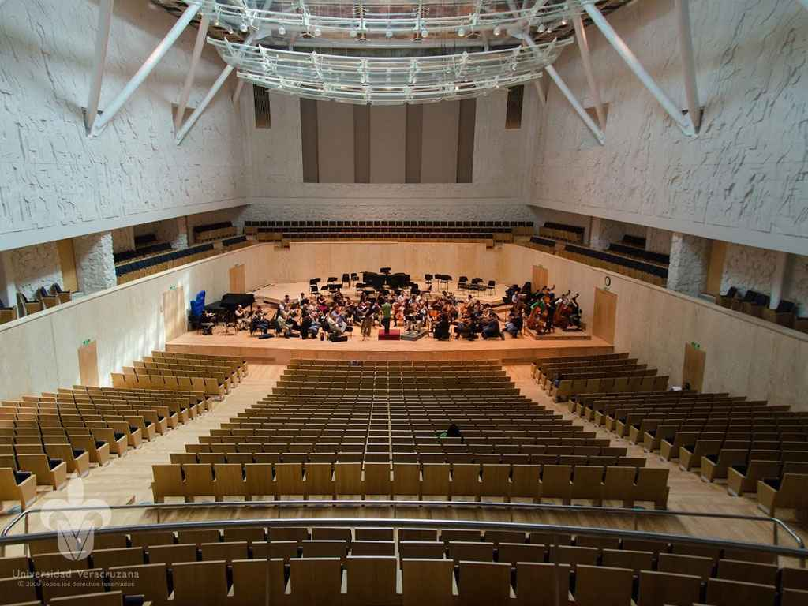
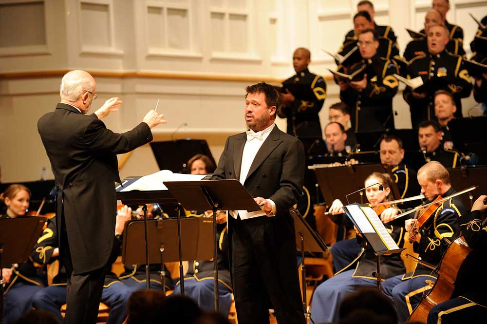
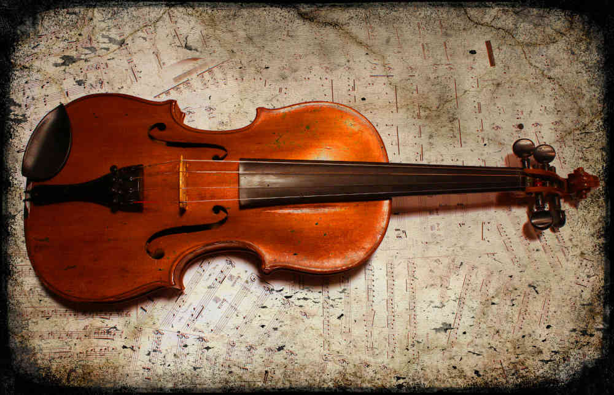

Para conocer toda la información, haga clic en la flecha de la derecha.

[1]
Introducción
Una orquesta sinfónica es una agrupación instrumental que interpreta, en su mayoría, música clásica, aunque en la actualidad se realizan conciertos con artistas de género pop y rock. La música que interpreta una orquesta está presente en películas, series de televisión, videojuegos, ya que ésta permite realzar las emociones de las personas.
Una orquesta sinfónica cuenta con una gran variedad de instrumentos musicales, lo que le permite reproducir innumerables combinaciones sonoras. Cada instrumento tiene un sonido particular, algunos comparten ciertas características físicas y armoniosas que exploraremos.
La música es un lenguaje que mueve o realza las emociones y una orquesta sinfónica se podría describir como el máximo instrumento musical que interpreta dicho lenguaje.
Propósito
El participante conoce qué es una orquesta sinfónica y los diversos instrumentos que la conforman. Genera la capacidad de identificar de manera auditiva las distintas familias que tiene la orquesta trabajando la forma de pensar y de sentir el género musical.
Además, conoce qué es un violín, aprende de su historia, sonido, construcción y desarrolla la habilidad auditiva necesaria para reconocer el sonido del instrumento.
Haga clic en la flecha para revisar la infografía sobre los instrumentos musicales que conforman una orquesta sinfónica.
Bienvenido a la Tutoría para la Apreciación Artística: El violín y la música orquestal.
En este primer módulo logrará reconocer los distintos tipos de orquesta que existen. Conocerá qué es una orquesta sinfónica, los instrumentos y familias musicales que la conforman, así como los sonidos que producen.
Una orquesta sinfónica es una agrupación musical que contiene instrumentos sinfónicos, de viento madera, viento metal, instrumentos de cuerda y percusión. Así mismo, cuenta con alrededor de 80 a 90 músicos y un director.
Para conocer más sobre una orquesta sinfónica, acceda a la página web de la Orquesta Sinfónica de Xalapa (OSX), www.orquestasinfonicadexalapa.com, en la que puede consultar la función, actividades y tipos de conciertos que ésta ofrece, como especiales, foráneos, infantiles, a beneficio, generales y viernes de ensayo.
A continuación, seleccione la pestaña correspondiente para consultar la información de cada tema.
Tipos de orquesta
Existen varias clases de orquesta determinadas por el tipo de música que interpretan, el número de integrantes que las conforman y los instrumentos que ocupan.
Se pueden llegar a formar varias combinaciones de familias de instrumentos como de integrantes, dependiendo del tipo de música que se interpretará.
Para profundizar más acerca de este subtema, le invito a revisar la siguiente infografía.
Familias de instrumentos de la orquesta sinfónica
Una orquesta sinfónica está conformada por cuatro familias de instrumentos: Alientos madera, alientos metal, cuerdas y percusiones. Al juntar a estas agrupaciones de instrumentos se forma una orquesta sinfónica.
Los instrumentos musicales son agrupados de acuerdo con las características que comparten y al sonido que producen, algunos generan el sonido al frotar sus cuerdas, otros por medio de vibraciones de viento y otros al percutir. A estos grupos se les conoce como familia de instrumentos.
Para conocer las características de cada familia de instrumentos, revise el siguiente material.
Para conocer el sonido de los instrumentos revise el siguiente video:
Distribución de una orquesta sinfónica
Una orquesta sinfónica cuenta con una distribución precisa de los instrumentos musicales, colocando las familias de instrumentos en cierta posición para un desempeño acústico óptimo: las cuerdas al frente; a un lado, los violines, las violas, los violonchelos y los contrabajos; atrás, las familias de viento, madera, metal y al fondo las percusiones.
Con la intención de conocer con más detalle esta distribución y cómo se conforma, revise la siguiente imagen interactiva.
Música que interpreta una orquesta sinfónica
Una orquesta sinfónica toca música compuesta especialmente para dicha agrupación.
Por lo general, interpreta música clásica. En la actualidad, es común ver que las orquestas realicen conciertos con música de películas populares y artistas famosos.
“Hoy en día, el término [orquesta] se refiere a un conjunto de instrumentos musicales y de los músicos que los tocan o ejecutan, sea cual sea el género musical que interpreten (clásica, tropical, moderna, etc.)” (Orquesta, 2021)
Conoce la Orquesta Sinfónica de Xalapa (OSX)
Para conocer más sobre la Orquesta sinfónica de Xalapa, se le invita a revisar el siguiente tríptico:
El director de orquesta

El director es una pieza clave y fundamental de la orquesta sinfónica. El trabajo de esta figura es mantener el tempo de la pieza y dar las entradas de los instrumentos para que la interpretación sea coherente. Debe interpretar la partitura según el concepto global, manteniéndose fiel al espíritu original de la obra, pero dando una visión personal. Para conseguirlo, necesita conocer a profundidad la vida y obra de los compositores, las épocas y estilos musicales y tener nociones generales de cada instrumento de la orquesta.
En el siguiente recurso podrá conocer más acerca de las funciones de un director de orquesta, así como a algunos de los directores más renombrados.
Para profundizar más acerca de este tema, consulte el artículo de Pegalajar (2019). El director de orquesta en el ensayo: análisis teórico y práctico, en la siguiente enlace:
2.1 El violín
En este tema se describirá qué es un violín, exploraremos su historia, las partes que lo forman, el sonido que produce y su construcción.
El violín es uno de los instrumentos musicales de origen italiano más populares en la actualidad por su sonido y versatilidad, se ocupa en música clásica, folklórica, pop, rock, entre otras. Es el instrumento más numeroso de una orquesta sinfónica.
Tiene más de 300 años en la historia de la música, pues data del siglo XVI. Es dinámico, con un amplio rango tonal y puede alcanzar sonidos muy agudos.
A continuación, se propone la consulta del artículo “Violín”, en Wikipedia, para conocer más acerca de su historia, sus características y las partes que lo componen.

[]
Antes de profundizar en las particularidades de este instrumento, se le invita a revisar la siguiente información y a disfrutar de la música.
Pegalajar, P. M. (2019). El director de orquesta en el ensayo: Análisis teórico y práctico. Música: Revista del Real Conservatorio Superior de Música de Madrid, 26, 179-201.
Unesco (s/f). Las listas del PCI y el Registro de Buenas Prácticas de Salvaguardia. Unesco.org. Recuperado 25 de noviembre de 2021, de https://ich.unesco.org/es/listas
La música es el arte de combinar sonidos, respetando los principios fundamentales de la melodía, la armonía y el ritmo para producirlos con instrumentos musicales, misma que ha potencializado habilidades en las personas, en su desarrollo y que ha facilitado la expresión de las propias emociones.
Recuerda que estas actividades son necesarias para poder continuar con tu desempeño.
El efecto Mozart: La música y el cerebro
“Ni un elevado grado de inteligencia, ni la imaginación,
ni ambas cosas unidas van a crear un genio.
Amor, amor, amor, esa es el alma del genio”.
Wolfgang Amadeus Mozart
La música es una combinación de sonidos que puede provocar sensaciones, emociones o experiencias en las personas que la escuchan, sin importar la edad que éstas tengan.
Durante la revisión del siguiente material, valoraremos el proceso de gestación de un niño con las primeras melodías de la vida.
Foro 1: La orquesta y sus instrumentos.
Descripción:
Después de revisar el Tema 1.3 Familias de instrumentos de la orquesta sinfónica, responda a las siguientes preguntas guía:
¿Qué sintió?
¿De qué se dio cuenta?
¿Qué llamó más su atención?
¿Qué instrumento le fue más fácil identificar al apreciar el video?
Apego a las instrucciones para realizar la participación.
Redacción y ortografía adecuadas.
Coherencia y organización de ideas principales.
Responder el comentario de, al menos, dos compañeros.
Lineamientos de entrega:
Integre su participación al Foro 1: La orquesta y sus instrumentos en la plataforma EMINUS 4, a más tardar en la fecha establecida en el Calendario de entregas.